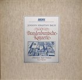

Notes on the sound quality of Brandenburg Concertos releases on LP. Only all-analogue stereo recordings qualify and this is not by far a complete list.
The cycle consists of six concertos, which would naturally fit on three LPs, but only two such releases are known (see below). All the others squeeze the cycle onto two LPs, which can be done in two ways:
Discogs. The concertos are fitted on five sides; the sixth side is empty.

Discogs. A fine recording, although not among the favourites. The concertos are reordered, not split. The sides are 27 and 28 minutes long, with no apparent impact on the sound.Discogs. A good middle-ground recording. The concertos are in order and No. 5 is split. The length of the sides is not a problem.
Discogs. The concertos are reordered, not split. Side 2 is almost 30 minutes long.
The recording was re-released in 1981 as two separate LPs (Discogs, second part). A copy of this reissue sounds dynamically compressed and lacks sparkle, especially in the inner grooves, although it is not distorted. I have not checked the original 1971 pressing yet.
Discogs. An analogue recording, even in 1981. The concertos are in order and No. 5 is split. The length of the sides is not a problem, and the sound is perfect. The recording was re-released in 1983 as two separate LPs, but these are already digitally remastered.